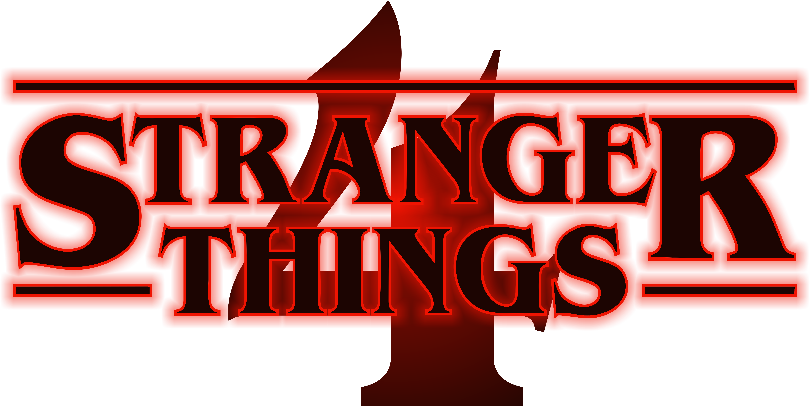

Seis meses depois da batalha de Starcourt, que deixou um rastro de terror e destruição em Hawkins, nosso grupo de amigos se separa pela primeira vez – e as turbulências do colégio dificultam ainda mais as coisas. Nesse momento de vulnerabilidade, surge uma nova ameaça sobrenatural ainda mais terrível, trazendo um grande mistério que pode ser a chave para acabar com os horrores do Mundo Invertido.
Assista o Trailer